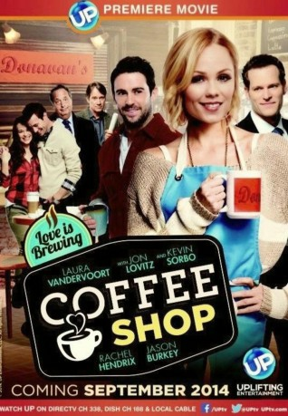
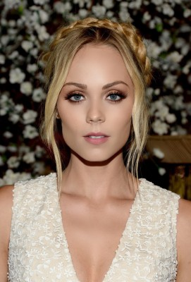
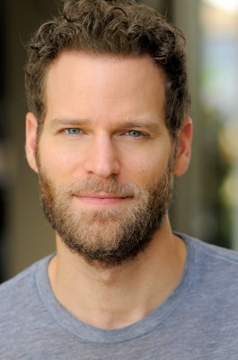

#5636 Coffee Shop - Liebe to go
Alternativ: Coffee Shop
 
 IMDB-Wertung: 6.0 / 10
IMDB-Wertung: 6.0 / 10  Metascore: 0
Metascore: 0 
Donavan Turner, eine smarte, unabhängige Endzwanzigerin, betreibt voller Leidenschaft ein hippes Café in einer malerischen Kleinstadt. Mindestens genauso leidenschaftlich ist sie auf der Suche nach Mr. Right, bisher jedoch erfolglos. Tatkräftig unterstützt wird sie dabei von ihrer Schwester Becky, deren Freund Kevin und den liebenswerten Mitarbeitern ihres Cafés. Vor allen verbirgt sie jedoch ein Geheimnis: Der neue Bankbesitzer will den Kredit nicht verlängern und ihrem Café droht die Zwangsversteigerung. Noch komplizierter wird es, als Donovans Ex Patrick wieder auf der Bildfläche auftaucht, um ihr seine Liebe zu gestehen - gerade als ihre Begegnungen mit dem Broadway Bühnenautor und Teetrinker Ben beginnen interessant zu werden.
Jahr: 2014
Dauer: 88 Minuten
FSK: 0
Land: USA Studio: Lighthouse Home EntertainmentTonspuren: DTS - ,
Untertitel:
Auflösung: 1080p (1920x1080) Größe: 7557 MB
Genre: Drama, Komödie, Liebe
Regisseur: Dave Alan Johnson
Drehbuch: Soo-young Kim
Soundtrack:
Darsteller:
-  Laura Vandervoort als Donavan
- Cory M. Grant als Ben
-  Josh Ventura als Patrick
 Jason Burkey als Kevin
Jason Burkey als Kevin- Dave Alan Johnson als Mr. Conner
- Oliver Trevena als Customer
- Gabriela Lopez als Sarah
- Montrel Miller als Eli
- Rachel Hendrix als Becky
- Jason McBeth als Alex
- Griffin Hood als Ben Actor
- Emmy Argo als Donavan Actor
- Kristi Averette als Coffee Shop Patron
- London Curtis als Boy walking by coffee shop
- Jeremy Grimsley als Couple in love
 Jon Lovitz als
Jon Lovitz als  Kevin Sorbo als
Kevin Sorbo als - Jack Teague als Ernie the newstand operator
- Shirley Tregre als Bar Patron
- Doris Collier als Sming Lady in Coffee Shop , uncredited
- Robert W. Hill als Max
- Brent Amacker als Background extra, misc.
- Melanie Darby als Girl on Cellphone
- Robert Hill als
- Matthew Blake Rogers als Coffee shop extra , uncredited
Datei: X:\2014(A-F)\Coffee Shop - Liebe to go (2014, FSK0, 1920x1080).mkv seit 02.03.2017
Festplatte: HD 2013(I-Z)-2014(A-Z)
 Es gibt insgesamt 119 Filme in der Gruppe '2014(A-F)'
Es gibt insgesamt 119 Filme in der Gruppe '2014(A-F)'